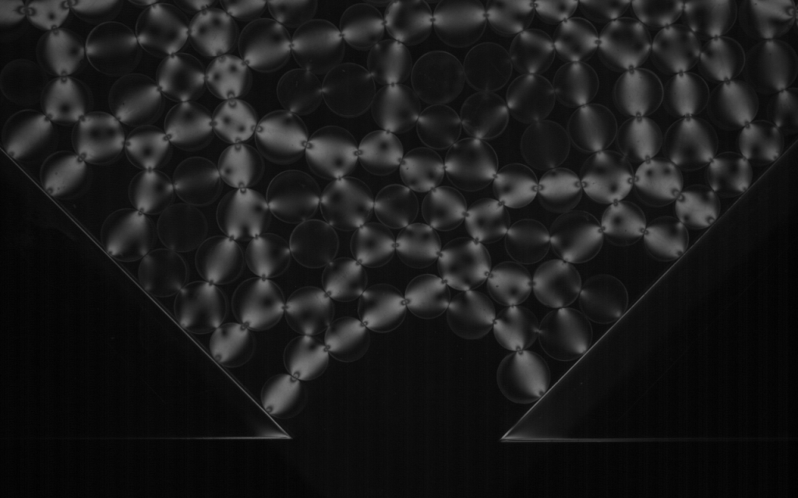
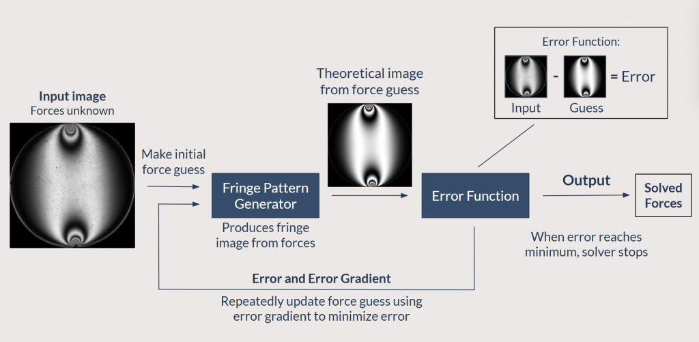
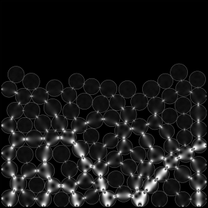

Research group project, 2024 to ongoing
Photoelastic Grain Solver
PeGS is a MATLAB-based tool for extracting per-particle contact force measurements from photoelastic granular material images and videos.

Project overview
The Photoelastic Grain Solver compares experimental fringe patterns to simulated patterns generated from hypothesized force configurations. The solver then uses nonlinear optimization to adjust the force configurations and minimize the difference between the observed and simulated images.
Transparent, birefringent disks placed between crossed polarizing filters produce light interference patterns when subjected to stress. The intensity and geometry of these fringes reflect each particle’s internal stress distribution.

Fig. 1: Fringe in 1.4 N diametric load case. PeGS force solution within 3 percent of applied force. Kamrin Group, unpublished data.
Contributions
Engineering improvements
Under Professor Kenneth Kamrin, my research partner Truman O'Brien and I developed algorithmic improvements to increase PeGS computational efficiency and force solution accuracy.
Analytic gradient integration
Derived and incorporated an analytic expression for the gradient of the solver’s error function, replacing MATLAB’s default finite-difference approximation and reducing computational cost per optimization step.
Image multi-scaling framework
Introduced a method that begins optimization at a lower image resolution and incrementally refines the solution at higher resolutions, reducing solve time while preserving force accuracy.
Multi-particle solver direction
Developing a routine that solves multiple particles simultaneously by incorporating force balance and Newton’s third law constraints to improve dense-packing consistency.

Fig. 2: PeGS solver routine graphic. Truman O’Brien.

Fig. 3: Simulated network fringe pattern. Kamrin Group, unpublished data.

Fig. 4: DEM simulation used to generate packing. Kamrin Group, unpublished data.
Image credits
Fig. hero: Photoelastic fringe patterns in stressed granular material. Ongoing research by Nathalie Vriend and Benjamin McMillan, 2025.
Fig. 1: Fringe pattern for a 1.4 N diametric load case. Kamrin Group, unpublished data, 2025.
Fig. 2: PeGS solver routine graphic. Truman O’Brien, 2025.
Fig. 3 and Fig. 4: Simulated network fringe pattern and DEM simulation. Kamrin Group, unpublished data, 2025.